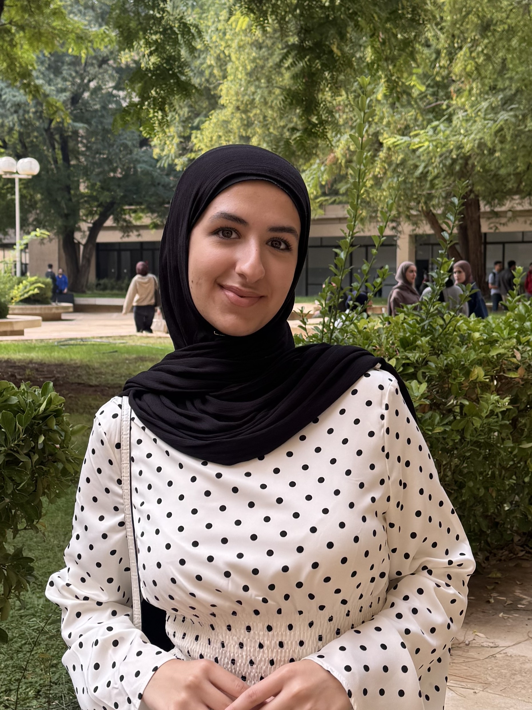

Key Soft Skills
- Analytical thinking
- Time management
- Problem solving
- Adaptability
- Communiction
- Open mindedness
Favourite Programming Languages, Tools & Frameworks
| Name | Type | Learn more |
|---|---|---|
| Python | Programming language | python.org |
| C++ | Programming language | isocpp.org |
| Javascript | Programming language | developer.mozilla.org |
| Wireshark | Network analysis tool | wireshark.org |
Where I see myself in 4 years!
In four years, I see myself working as a cybersecurity professional in digital forensics. I want to help organizations find weaknesses in their systems before attackers do. I also plan to build hands on experience with cloud security and earn recognized certifications such as CompTIA Security+. I am much interested in AI too and see myself working in that field and finding a way to integrate it into my digital forensics job. My goal is to keep learning and contribute to a safer digital environment for individuals.